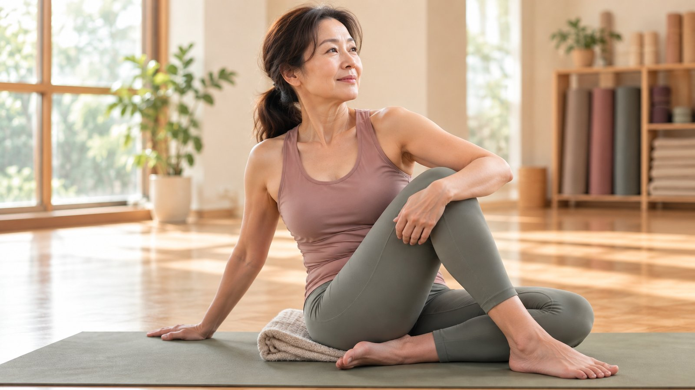

產後、更年期的體態變化，跟一般肩頸緊有什麼不同？

- 同樣一句「全身好緊好累」，產後與更年期的荷爾蒙生理背景截然相反，絕不能套用同一套方法硬操。
- 產後身體處於「鬆弛素作用後的關節微不穩」與腹直肌分離，核心缺乏凝聚，盲目瘋狂拉筋只會加劇骨盆薦髂關節負擔。
- 更年期前後則是「雌激素下降導致的筋膜膠原蛋白流失脫水與關節滑液減少」，身體容易乾燥僵硬，強行過度折疊容易引發肌腱發炎。
- 壁繩瑜伽提供骨盆與脊椎懸掛支撐，分擔自重，讓身體在無重力恐懼下重獲安全舒展，但不能取代骨密度檢測或產後醫療復健。
以前累了，只要週末睡飽一覺就元氣滿滿；現在卻常覺得起床時全身關節沉重卡卡，抱孩子、做家事或坐在辦公桌前，身體好像不是自己的。很多人困惑：「我也沒做什麼粗重工作，為什麼肩膀、下背和髖部總是又緊又痠？」同樣是緊繃，放在「產後」與「更年期」兩個截然不同的女性生命階段，背後的生理機制與照顧邏輯完全不同。
產後體態變化：不是肉變多了，而是「深層地基失控」
許多新手媽媽在生產完數個月後，看著鏡子裡凸出的小腹、前傾的骨盆與下沉的腰背，往往感到非常自責，急著做仰臥起坐或劇烈運動想「瘦回去」。但這往往忽略了生產後的深層生理結構轉變：
- 鬆弛素（Relaxin）的滯留效應：懷孕期間為了容納胎兒與分娩，身體分泌鬆弛素讓骨盆韌帶、恥骨聯合與全身關節軟化延展。產後數個月內，韌帶往往尚未完全恢復原有張力，此時關節處於微不穩定的「過度鬆弛」狀態。
- 腹直肌分離與核心斷聯：膨大的子宮將腹白線撐開，腹直肌左右分離，腹橫肌與深層腹內壓調控機制暫時失能。此時若盲目做仰臥起坐或高強度棒式，只會讓腹白線承受更大剪切力，導致腹部更鼓、腰椎更痛。
- 照顧動作的重力前移代償：長期單側抱嬰、彎腰換尿布、低頭哺乳，身體的重心被嚴重往前拉扯，迫使上背斜方肌與下背豎脊肌 24 小時像鋼索一樣死命拉住軀幹，造成嚴重的緊繃與痙攣。
產後的核心原則：先講求「穩定」而非「拉伸」，先找回「呼吸與腹橫肌向心微收」，切忌在韌帶未穩時進行高幅度極限開髖或猛烈過度拉伸。
更年期體態變化：雌激素下降引發的「筋膜乾澀與肌少傾向」
如果你正處在 45 至 55 歲前後，常感到早晨起床下床時足底與關節特別僵硬、稍微活動一下就全身痠痛，這往往與女性荷爾蒙的深層轉折有關：
- 雌激素（Estrogen）下降與膠原蛋白流失：雌激素是維持全身肌筋膜水分、彈性與軟骨滑液分泌的重要激素。更年期前後，體內膠原蛋白合成速度驟降，筋膜層變得如同乾涸的海綿，失去彈性與滑動性，使人經常感到「全身緊繃牽制」。
- 肌肉流失加速（肌少傾向）：保護關節的肌肉質量自然萎縮，使得日常看似平常的走路、站立與爬樓梯，關節直接承受了過去兩倍以上的地面衝擊力。
- 自律神經與睡眠結構受損：更年期常伴隨盜汗、熱潮紅與夜間淺眠，身體長年處在交感神經亢奮、副交感神經無法修復的慢性發炎狀態，讓肌肉始終維持在「防禦緊繃」的戒備姿態。
更年期的核心原則：溫和保濕與滋潤，給予充足的休息節奏與抗阻刺激，切忌「跟二十歲的自己比硬拼」，嚴禁在肌肉僵硬狀態下暴力硬折。
為什麼「死命硬練、盲目拉筋」往往適得其反？
許多女性面對身體變化，常落入兩個極端陷阱：
- 過度拉筋陷阱：覺得肩膀緊、腰很硬，就找各種極限體位「死命拉」。但在產後韌帶鬆弛期，過度拉伸會讓關節囊更鬆弛失穩；在更年期關節滑液減少時，硬拉只會反覆研磨軟骨與肌腱附著點，引發棘手的肌腱炎。
- 盲目重操陷阱：報名高強度間歇或跳躍爆發課程，試圖用意志力燃燒熱量，結果反而在核心支撐不足的狀況下造成腰部挫傷或膝關節半月板發炎。
壁繩瑜伽能提供什麼安全庇護？
壁繩瑜伽在此階段的獨特價值在於「卸除負擔、重建空間」：
- 懸掛分擔自重：利用特製骨盆帶將身體部分重量懸掛於壁繩上，讓骨盆、脊椎與膝關節在「幾近零重力壓迫」的狀態下伸展，徹底避免了硬質地板對脆弱關節的直接壓迫。
- 喚醒深層本體感覺：透過繩帶給予身體清晰的邊界回饋，幫助產後產婦重新找到鬆散骨盆的中立軸線，幫助熟齡女性在極度安心的支撐下安全活動關節。
- 促進副交感神經修復：結合溫和的倒置與懸掛放鬆，讓過度緊繃的自律神經系統切換到修復模式，改善血液循環與深層緊繃。
醫療紅旗警訊！這些狀況請優先掛號專科醫師
生理階段的變化必須嚴守醫療界線，出現以下狀況請優先就醫：
- 產後警訊：產後超過 6 週仍有持續鮮紅惡露、發燒、骨盆劇痛、或腹直肌分離超過 3 指寬並伴隨腹壁疝氣膨出。
- 更年期警訊：停經一年以上再次出現異常陰道出血（需立即由婦科排除子宮內膜病變）。
- 嚴重骨質疏鬆警訊：雙能量 X 光骨密度檢測（DXA）顯示 T-score 小於 -2.5，或曾有非外傷性骨折史，嚴禁進行未經醫囑評估的深幅前屈或快速扭轉動作。
了解目前的站姿力線與骨盆代償
無論是產後想找回骨盆中立，或是熟齡想確認關節壓力分佈，AI 體態檢測能透過客觀 2D 幾何線條記錄目前的重心平衡，由老師當面與您討論最適合現在身體節奏的溫和練習方式。
預約首次 NT$299 AI 體態檢測（含老師當面解讀）結語：順應身體的季節，溫柔而堅定地找回平衡
女性的身體經歷懷孕、生產到荷爾蒙轉折，宛如大自然的四季更迭。我們不需要強求身體永遠停留在春天的青澀，而是學會讀懂身體在不同季節釋放的訊號。放下對完美的執念，用安全、有支撐的方式陪伴身體，你會發現，熟齡後的從容與穩定，是歲月賜予最美好的禮物。
本文為女性生理與體態力學衛教分享，並非醫療行為，亦不提供任何醫療診斷或治療承諾。產後運動許可、荷爾蒙失調症狀或骨質疏鬆診斷，請務必諮詢婦產科、家醫科或復健科專業醫師。
常見問題
產後和更年期的身體緊繃，為什麼不能用同一套方式處理？
因為兩者的荷爾蒙與生理背景完全相反。產後體內仍殘留鬆弛素，關節與骨盆韌帶鬆弛微不穩，需要的是溫和穩定與向心凝聚；而更年期前後則是雌激素下降，導致肌筋膜膠原蛋白流失脫水、關節滑液減少，容易僵硬乾澀與肌少。兩者成因不同，練習重點自然大相逕庭。
產後媽媽想調整體態，最早什麼時候可以開始？
沒有適用於所有人的固定時間表。自然產通常在產後 6 至 8 週惡露排淨、回診婦產科醫師確認子宮與傷口復原良好後，方可從極溫和的呼吸與骨盆穩定開始；剖腹產或有腹直肌分離大於兩指寬者，則需更長休養時間並嚴格遵從醫囑，切忌提早進行高強度腹部捲體或極端開髖。
步入四十、五十歲覺得全身僵硬卡卡，就代表更年期到了嗎？
不一定。中年後的僵硬常是荷爾蒙波動、長年久坐少動、慢性睡眠障礙與工作家事壓力交織的結果。若月經週期明顯改變、出現熱潮紅盜汗或情緒劇烈起伏，建議由婦產科抽血檢查荷爾蒙指標（如 FSH、LH、雌二醇）由醫師確診，不宜自行對號入座。
壁繩瑜伽有繩子支撐，就一定百分之百適合產後或更年期嗎？
不一定。輔具提供支撐能降低關節負擔，但動作品質、受力角度與強度節奏仍需個別調配。若有嚴重骨質疏鬆（T-score 小於 -2.5）、近期腹部手術傷口未癒或活動受限，必須先告知老師並確認醫療許可；並非加了繩子就能隨意挑戰高難度動作。
第一次預約諮詢或體驗，該如何向老師清楚說明自己的狀況？
您可以具體告知四個重點：目前處於產後幾個月或停經過渡期、日常最吃力的動作（如抱小孩下背痠或起床時腰背僵硬）、近期醫師或物理治療師的限制叮嚀、以及近期的睡眠品質。清楚的背景資訊能幫助老師在課堂上給予最安全合適的幅度調整。